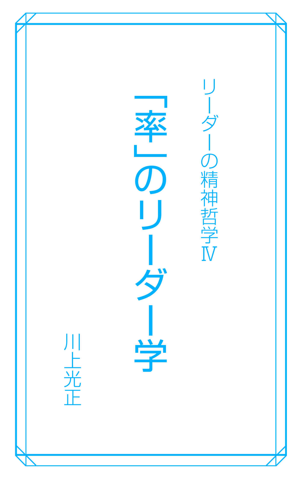
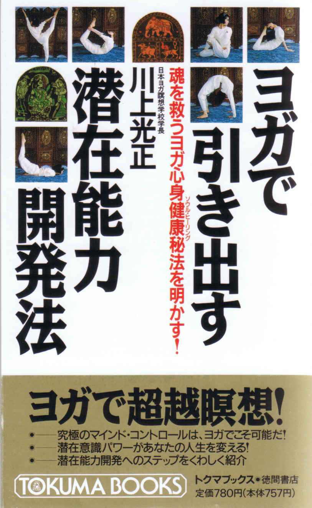
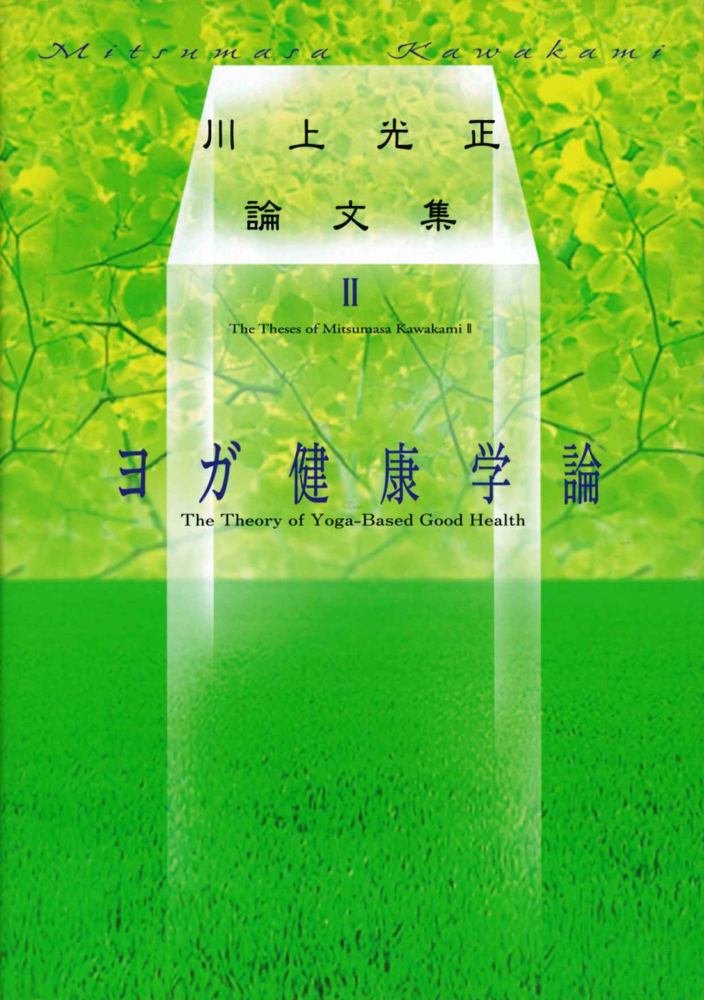
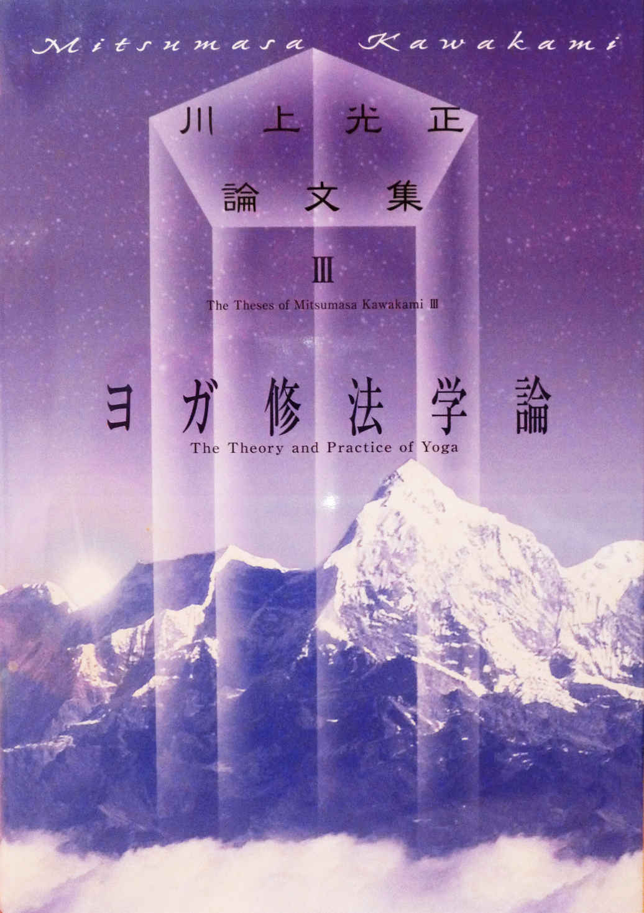
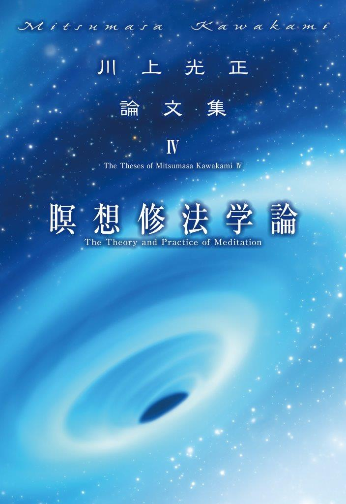
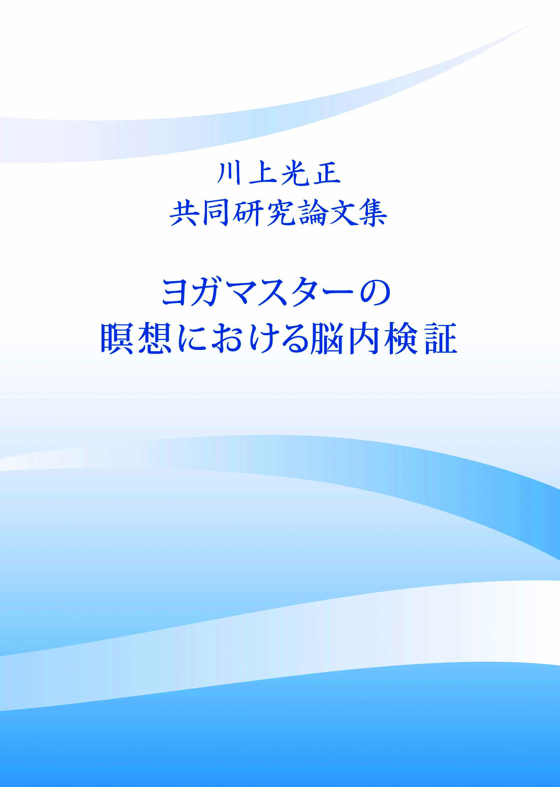

| 「率」のリーダー学 【４シリーズ】リーダーの精神哲学 | |
| 川上光正 | |
| (2017) | |
■目次■
「率」のリーダー学
「人を活かす」ことを最重要に考える
ノーブレス・オブリージを発揮して先頭に立つ
リーダーは「棹」をどう入れたらいいか
部下から「カウント・オン」されるリーダーとは
直言、諫言はこれを重用する
己を捨て部下を活かす責任感
メンバーの相乗効果を引き出す
つねに「まだ」型思考と、性善説で部下に接する
リーダーはいつも期待感を表明する
長所伸張法が人材を育てる
褒めて育て、叱って大きくする
ヨガで実践力と管理能力を養う
徳と富を兼備した松下幸之助氏のカルマ
明るく磨かれた本田宗一郎氏の魂
精神哲学に貫かれた「悠久」の経営
エピローグ
リーダーは善の因果律を持て
精神哲学によって運を拓く
※本電子書籍は、一九九七年に出版された『リーダーの精神哲学（第一刷）』に基づき、四シリーズの電子書籍版として制作されました。

『[サナトクマーラがいった、]
「このように見なし、このように思考し、
このように認識する人のアートマンから生気が生ずる。
そのアートマンから希望が、アートマンから記憶が、
アートマンから虚空が、アートマンから熱が、アートマンから水が、
アートマンから顕現と消滅の二つが、アートマンから食物が、
アートマンから力が、アートマンから認識が、アートマンから瞑想が、
アートマンから心が、アートマンから意欲が、アートマンから意が、
アートマンからことばが、アートマンから名称が、
アートマンからもろもろの聖句が、
アートマンからもろもろの祭式が生ずる。
一切のもの（全宇宙）は、
まさにアートマンからのみ生ずるのである」と。』
（『チャーンドーギヤ・ウパニシャッド』七・二六）
「人を活かす」ことを最重要に考える
企業経営者（に限らないが）には二つのタイプがある。
非常に精力的に動き回り、忙しそうにしているのに業績はもう一つのタイプ。
一見、悠々のんびりと仕事をこなしているのに、効率よく会社を動かしているタイプ。
この違いの原因はどこにあるか。さまざまな理由が考えられるが、大きな要因として、自分一人で何もかもこなそうとしているか、人の力をうまく活用しているか、の違いによる点があげられよう。
孔子の弟子に子賎という人がいた。子賎はある地方の代官として赴任したが、琴を弾くばかりであまり仕事をしない。にもかかわらず、その地方はきちんと治政されている。不思議に思った前任者が、その秘訣をたずねると、子賎は答えた。
「自分の力だけで仕事をしないことです。人の力をうまく活用していくことです」
管理者の仕事は「人を活用する」ことである。自分ならば簡単にできる仕事でも辛抱強く人に任せてみることである。と同時に、自分よりも能力のある人をうまく使いこなして、より効率よく全体を動かしていくことでもある。
アメリカの鉄鋼王アンドリュー・カーネギーは自分の墓碑銘にこう刻ませている。
「彼自身よりはるかに賢い人たちに取り囲まれることのできた男、ここに眠る」
彼の口癖は、どんなにすぐれた人間でも他人の協力なしには、その力を発揮することができないというものだったらしい。人の力を活用すること、信頼できる協力者を得ること、彼の経営哲学の根本はそれだったのである。
日本の企業家にこうした例をさがすなら、故本田宗一郎氏がそうだろう。
本田氏は技術者としては文句なしの一級品だったが、数字にうとく、会社の財務、経理には明るくなかった。そこで、自分の欠点を補える人材・藤沢武夫氏を見つけてきて、経営面は彼にまかせたのである。藤沢氏なくして、ホンダの今日の発展はなかったろうが、結局、本田氏にそれだけの度量、パートナーのもつ能力を引き出し彼にまかせる器量があったということである。
また、本田氏―藤沢氏の例は、組織のトップは「ツー・トップ」方式が望ましいことも示している。
権力というのは一ヵ所に集中するといずれ腐敗する。力が一人に集中した組織は自浄能力を失う場合が多いのである。
だから、トップリーダーは、権力の集中をみずから防ぐべく、事情が許すかぎり、協力者やパートナーを自分と同格くらいの地位にすえて、権限を委譲した「ツー・トップ」方式が望ましい。互いに協力し合い、また権力の乱用を監視し合えるからである。それが無理なら、自分の〝お目付役〟か〝御意見番〟〝顧問〟〝相談役〟をつくっておいたほうがいい。
私も自分が創立した会社を、信頼できる二人の高門弟に代表取締役としてすっかりまかせている。二人は互いに切瑳琢磨し、協力し合ってやっているから、どちらが偉いということもなく、相乗効果も上がっている。
ふつう、組織の形態というのはトップが一人の三角形をしているが、私はツー・トップの「台形」型の組織形態が理想的だと考えている。
同格のパートナーを得るのも、部下に仕事をまかせるにしても、いずれも相手を信頼していないとできないことである。それは、人を究極のところで信頼できるかどうかというリーダーの人間性も問われるし、それまでに信頼できる部下を育ててきたかというリーダーの人材育成能力も問われることになる。
その意味で、信頼できる協力者もいない、仕事をまかせられる部下もいない、孤独な経営者はそれだけで怠慢といわれても仕方がないのである。
よき協力者、よき部下を得るには、どうしたらいいか。もっとも大切なことは、私心を捨て去ることだ。
私利私欲を捨て去って己を無にすれば、器に水が流れ込んでくるように、人が集まってくる。人が集まってくれば、それとともに力も知恵も集まってくる。人の上に立つ者にとって最重要の資質である。
ノーブレス・オブリージを発揮して先頭に立つ
「やってみせ、言って聞かせて、させてみて、ほめてやらねば人は動かじ」
山本五十六の言葉である。また、江戸末期の篤農家・石川理紀之助という人が、「寝ていて人を起こすなかれ」といっている。
いずれも、平明な言葉だが、人を動かす要諦を余すところなく簡潔にいい表している。
つまり、「やってみせること」、人を起こすときは自分がまず起きてなくてはいけない。率先垂範の哲学である。みずから陣頭に立って手本を示してみせることが、もっともメンバーを動かしやすく、組織の団結力を高める近道なのである。
ある中小企業の老社長が述懐していた随分昔の話である。今日で本年の業務も終るという年末の仕事納めの日。大掃除をすませ、その後にささやかな忘年会のつもりで社員一同とともにビールで乾杯しようと、社長は工場に出向いた。
社員はざっと掃除をすませ、それぞれグループをつくって雑談に興じている。明日からの休暇でホッと一息、気が緩んでいるのだろう。それはいい。しかし、共同トイレの掃除を誰一人しようとしない。
社長は迷った。一年間、働いてくれたのだから、最後の日のトイレ掃除くらいは黙って見逃そうか。それとも、誰か呼んで、「おい、まだトイレ掃除がすんでないぞ」と小言を言おうか。しかし、この社長はどちらの方法もとらなかった。モップとバケツを持ってきて自分で掃除を始めたのである。
「もちろん、モップを使いながら腹が立ってきました。なんで俺がこんなことをやらなきゃならんのか、と。それはどの社員にも共通の気持ちだろう。小言をいって、誰かにやらせるのが一番手っ取り早いが、それでは彼らに『強制された』という気持ちが残るだろう。だったら、自分が黙って手本を示そう。社員もそれを見て、自分たちの落ち度に気づいてくれるはずだ」
社長はその時の心情をそう説明していた。たしかに、社長の行為に気づいた社員があわててモップを取り上げ、掃除を代わったという。そして、それまでは恣意的に行われていたトイレ掃除はその後当番を決め、規則的に行われるようになったというが、今では専門業者に任せているという。
たかがトイレ掃除と考えるなら、それは違う。トイレの掃除という誰もが嫌がり、敬遠したがる仕事をリーダーが率先してやったからこそ効き目があったのである。人を起こすのにまず、自分がやってみせたから、人を動かす効果が上がった。やっておけという指示だけだったら、その場限りで、当番制ができることはなかったろう。
ノーブレス・オブリージ（Noblesse oblige)という言葉がある。
「特権を有する者が果たすべき義務」という意味だ。昔、イギリス軍などでは、貴族将校の戦死が多かったという。ふだんは特権的地位にある貴族将校が戦闘の際、ノーブレス・オブリージによって先頭にたって戦ったからだといわれる。
リーダーがトイレ掃除する必要はないかもしれない。しかし、いつでもどこでも、組織の先頭に立って泥をかぶるノーブレス・オブリージの覚悟をしておくことは大切である。
陣頭指揮、率先垂範はある意味で、部下を動かす方法としてはもっとも単純なものであろう。だが、組織構成や指揮方法が単純であればあるほど組織は強靭になり、有効に動くものであることを忘れてはならない。
部下をどうやって動かそうかと迷うときは、たいてい「寝ていて人を起こそう」としているものだ。迷ったり悩んだりしたら、みずから率先して動いてみる単純な方法をとってみるといい。
リーダーは「棹」をどう入れたらいいか
知り合いの出版社の幹部と雑談していた折、こんな話を聞いた。
「先生、私の役職は編集長ですが、部下の編集部員からはいつも〝無視〟されています。編集長なんかいてもいなくても同じですよ、といつも部下に言われてますし、たまにセキ払いしたときに、ああ編集長いたんですか、てなものです」
彼はニコニコ笑いながら、さらに続けた。
「先生、部下をそこまでにするのに苦労したんです。部下が私の存在を忘れ、私なしで仕事ができるように育てるまでに・・・。彼らは私を無視したほうがよい仕事をするんです。ですから、どんどん無視してくれていい。私は彼らを無視しません。いつも見て見ぬふりをして、彼らを見守っていき、しめるべき手綱はしめます。最終的な責任はいつでも私が取る覚悟です」
これを聞いて、私は感心した。
ふだんは細かいことはいわないで、部下の能力を自由に発揮させるが、仕事にはいつも目配りして、責任は自分が取る――こういう態度が人の上に立つ者にもっとも重要だからだ。
この編集長の言葉には、いくつか学ぶべきものが含まれている。責任感の大切さ。それから、部下が上司の助けなしで仕事を進められるようになるまでの人材育成の重要さ。そしてもう一つ、「信頼して仕事をまかせることと放任は違う」という点である。
部下に仕事をまかせっ放しにしてしまうことを、部下への信頼感を示すことだと思っている人がいるが、それは違う。放任はまかせっ放しの無責任だが、真の意味で部下に仕事をまかせるとは、仕事を与え、見守り、適当にアドバイスをし、最後に責任を取ってやることなのである。
私も部下を信頼して仕事を与え、その進行方法などには口出しをしない。質問や報告は密に受ける。肝心なポイントのみアドバイスや指示を与え、口出しをしすぎないようにしている。
不必要にリーダーが指示を出したり、助言をすると、部下が萎縮したり依存してしまうし、いつまでもリーダーの指示なしでは仕事が進められない〝指示待ち族〟になってしまう。といって、まかせっ放しにして報告も受けないのでは、仕事の方向の軌道修正ができなくなるし、部下の気持ちの負担にもなる。
「おまえに全部まかせるから好きなようにやってみろ」というまかせ方を意気に感ずる部下もいれば、「どうしよう、私には責任が重すぎる。できっこない」と負担にしか感じない部下もいる。だから、信頼しても放任してはならない。そのつど、報告を受け、相談にのる必要がある。
そのへんの機微を私は、
「棹を入れないと、（仕事の）流れがわからない
棹を入れすぎると流れがつかえる
棹を置きっ放しにすれば流される
棹は適度に入れて、入れたらそのつど抜くことだ」
と表現している。
情に棹さして流されないように、棹を自分でしっかり持って、自由に操作することでもある。日常の業務は部下が自主的に行い、最終的な責任は上司が負う。上司なしでも仕事は進められるが、上司がいないと不安だ、上司がいると心強い。そう部下から、精神的に「あて」にされるリーダーが実はベストなのである。リーダーは組織の象徴的存在――リーダーなしでも仕事は進むが、リーダーなしでは組織が成り立たない――であることが望ましいのだ。
そのためには、ふだんは厳しく接していても、「思いきりやれ、責任はオレが取る」という毅然とした態度が要求される。
部下から「カウント・オン（頼られる）」
されるリーダーとは
漢の武帝につかえた官僚に張湯という人物がいた。地方の小役人から漢の副宰相になった有能な男である。
彼は単に切れ者であっただけでなく、人間関係の処理にもたくみで、部下の評判もよかった。彼の人心収らん術の要諦は「功は部下に譲り、責は自分が負う」点にあった。
あることで武帝の判断をあおぎ、不備を指摘され、叱られる。すると張湯は謝罪し、帝の意向にしたがったが、それだけでなく、自分の部下の中から有能な人間の名をあげて、「その点はまさに、某が私に指摘したところです。しかし、それに私は耳を貸しませんでした。責任は私にあります」とつけ加えるのを忘れなかった。
逆に、張湯がほめられた場合には、やはり部下の名をあげて、
「それは某という部下の具申であって、私の意見ではありません。彼のいうことを私はそのまま取り上げたにすぎません」
失敗は我が身に帰する一方で、手柄は部下に譲ったのである。
これは、人間のできた人物でもなかなか行いがたいことであるが、部下を心服させるためにはリーダーに欠かせぬ条件でもある。ある仕事が成功裡に終ったとき、
「よくやった。すべて君たちのおかげだ」
と手柄を部下に譲ることが何より大切だ。この時、
「いいえ、これも部長の指導のおかげです」
という答えを期待してはならないのも、リーダーの辛いところである。
実際には、この逆のリーダーが多い。つまり「手柄は自分に、責任は部下に」のタイプだ。ある仕事がうまくいかなかったとする。「君のせいだぞ、どう責任を取るつもりだ」「だから私は最初から反対だったんだ。オレは知らんぞ」
などと不手際の責任を部下に押しつけて、自分は知らん顔をしている。一方的に部下の非を責めて、自分の責任問題には口をぬぐっている。もう、これだけでリーダー失格である。
部下の成功を横取りしたり、一人占めしたりするリーダーもいる。
「今回のプロジェクトほど苦しいものはありませんでした。我ながらよくやったと思います。部下の尻を叩いて、ここまで引っ張ってくるのはたいへんでした」
などと、成功の要因をちゃっかり一人占めして、上司に売り込んでいる幹部もよく見かけるところだ。
こういうリーダーほど、部下をくさらせ、信頼を損ね、彼らの意欲をつみとるものはない。リーダーたる者、部下の失敗を自分の責任にするだけの度量を備えていなくてはならない。
英語に「カウント・オン・ミー」という言葉がある。直訳すると、私を勘定に入れてくれていい、私も一緒にやるという意味になる。
つまり、私を当てにしてくれていいぞ。責任はオレが取るから、君たちは安心して仕事を全力でやってくれというリーダーの態度表明の言葉である。それが部下を発奮させ、
「この人がいれば安心だ」
「いざというときは部長が胸を叩いてくれる」
と部下の意欲と信頼感をかき立てるのである。
単に組織上、職制上の「上役」であるから人がついてくるのではない。それだけでは単なる管理者である。真のリーダーとは、責任はオレが取るぞという揺るぎない態度と、手柄を部下にゆずれる寛大さを併せ持った人のことをいう。部下から、あの人こそオレたちのリーダーだと「カウント」されなくてはならない。
直言、諌言はこれを重用する
ある本を読んでいたら、故松下幸之助氏の次のようなエピソードが紹介されていた。
松下氏があるところで行った講演の内容が好評だったので、それを書物にしようとして重役会にかけた。ところが一人の平取締役が立ち上がり、これに真正面から異を唱えた。
――会長の説く内容はたしかにすぐれていて、理想論としては非のうちどころがない。しかし現実の処せん法としての有効度は果たしてどうか。松下社内の実情と照らし合わせてみても、かなりの隔たりを感じる。それをそのまま本にするのはいかがなものか。読者に対する「裏切り」にならないか――
天下の松下の痛いところをズバリと直言したのである。松下氏は一瞬、不快な表情をこしらえたが、結局、彼の意見を入れて出版をとりやめた。この平取締役がのちに、松下氏から異例ともいえる抜擢を受けて社長になった山下俊彦氏だった。「重役会でも臆せず自分の意見を述べる男だったから」というのが、松下氏の抜擢理由である。
言いも言ったり、聞くも聞いたりという感じだが、良薬は口に苦し。経営者や幹部にとって耳の痛い発言をする部下、上司であるにもかかわらず直言、諫言を辞さない人間、そういうメンバーこそリーダーは重用しなくてはならない。
現在、山下俊彦氏は松下電器の相談役に退いているが、平成九年七月十五日、大阪で開催された関西日蘭協会のパーティーで松下家の世襲を批判。「創業者（故松下幸之助氏）の孫というだけで松下正幸氏が副社長になっているのはおかしい」と語っている。
『史記』にも、「忠言は耳に逆らえども行いに利あり」とある。上役への異論、反論にこそ、リーダーが本当に耳を傾けるべき、有益な内容と刺激が含まれているものである。
第一には、異論、反論はリーダーの指示や意向の間違い、不完全さを発見できる手がかりになり、仕事上の失敗を未然に防ぐのに役立つ。
第二には、上役に直言、諌言することほど組織員にとって恐いことはない。それをあえてするというのは、彼によほどの覚悟と自信があるからだろう。当然、そこには耳を傾けるだけの価値がある。
リーダーたる者、部下の意見はこれをいたずらに遠ざけず、むしろ進んでこれを聞き、吸い上げるべき点は吸い上げ軌道修正する寛容さ、度量が必要となってくる。
だが、リーダーとして狭量な人はこれと逆をやる。直言を辞さない硬骨漢を「けむたい」と遠ざけ、自分にとっていいことや耳ざわりのよいことばかり言う側近、自分の言うことを無批判に受け入れるイエスマンだけを周囲に置くようになるのである。その結果、どうなるか。
勝海舟の次のエピソードがそれを教えてくれる。
明治期、当時の政界の首領・伊藤博文の取り巻き達が、赤坂・氷川に隠遁している勝海舟を訪ねて、しきりに伊藤の悪口をいう。勝は頃合いを見てこう問うた。
「もっともだが、その批判を伊藤の前で直接いえるかい」
とり巻き達は黙ってしまった。
「そうだろうな。伊藤は実に頭のいい、物の見える男だよ。しかし、君たちがひとことも批判をせず、いいことばかり耳に入れていれば、伊藤といえども目は曇っちまうよ」
いかにすぐれた資質を持つリーダーといえども、周囲に直言、苦言を言わぬイエスマンだけを置いていたら、視野は狭くなり、増長して道を誤るのだ。
だからこそリーダーは、耳の痛い話、直言をしてくれる「けむたい」部下の言葉にこそ、素直に耳を傾けなくてはならない。
「へつらい者を避けるには賢い側近を選び、その者だけに直言させよ」
『君主論』を書いたマキャベリの言葉である。
己を捨て部下を活かす責任感
日本を、どこにも責任の所在がない、誰も責任を取らなくていい「無責任体系」の国だといったのは平成八年に逝去した政治哲学者の丸山真男氏である。
たしかに、社会が複雑になり、高度に組織化されてくると、幹部が取るべき責任が下へ押しつけられる、責任の横流しやたらい回しが行われるなど、責任の所在は不明確になっていく傾向が強い。
動燃を引き合いに出すまでもないが、日本は役人天国で、官僚の天下りがよく話題になる。局長クラス以下の役人ＯＢが特殊法人や民間企業に天下っても、実際にはあまり役に立たないケースが多いという。なぜなら、彼らは政策立案の能力には長けていても、その政策の是非については責任を取らなくていいシステムの中で仕事をしてきた。そのため、「責任を取る」能力、態度に欠けている。しかし、実は民間企業の指揮官に最も要求される資質は、その責任能力なのである。
古くは、捕虜の刺殺を兵に命じておきながら、戦後、その責を問われると、「いや、あれは部下が勝手にやったことだ」と言い逃れする将校。違法な株取引が発覚したとたん、「あれは秘書がやったこと・・・」と、責任回避するリーダー。いずれも人の上に立つ資格はない。
一般の会社でも、何か問題が起きた場合、「私はそんなこといった覚えはないぞ」「どうするつもりだ。君が責任を取れよ」などと、部下の失敗やミスを一方的に責めたり、責任を押しつけたりする管理職がいるが、これは言語道断。責任転嫁された部下はまったく逃げ道がない。部下をそういう立場に追い込んだというだけでリーダー失格である。
かりに、その問題が部下のミスや独断によるものであっても、管理職には少なくとも管理不十分、監督不行き届きの責任は生じる。人を束ね、組織の長たるリーダーは、他は無能であっても、一点、「責任を取る」覚悟だけは常々しておかなくてはいけない。
豊臣秀吉が毛利と戦ったとき、高松城を水攻めにしたことはよく知られている。秀吉の大軍と水に囲まれて、食糧もつきはてた高松城兵は死を座して待つという状況に追い込まれた。このとき城の守将・清水宗治は己の命と引きかえに城兵の命を助けるという、秀吉側の講話条件に応じ、敵味方が見守る船上で割腹した。
現代のリーダーが腹を切ってまで責任を負うことはあり得ないが、自分の命を捨ててまで部下の身命を救う責任感の重要さは本質的に変わらない。「いつでも俺が責任を取る」というリーダーの覚悟が部下を動かし、統率するからである。
「一将功成りて万骨枯る」という言葉がある。一人の大将が名声を得るそのかげには、多くの兵卒の命が失われている。たくさんの部下の労苦と犠牲の上にリーダーの栄光は輝いているという意味だ。日露戦争の旅順陥落のために何万という兵が命を落としたが、そのおかげで乃木将軍の功名は大いに上がった史実などはその典型であろう。
しかし、将たる器なくて、万骨がその命を捨てるわけもない。「あの人のためなら・・・・」と部下に思わせる資質をリーダーの方が備えていなくてはならない。その大きな要因が、自分が責任を負って部下を助けるという「一将死して万骨生きる」の精神である。
人の上に立つリーダーや経営者は必ず、その地位にふさわしい責任がともなう。リーダーはいつでも責任を取ることを念頭に置いて事に臨まなくてはならない立場にある。
リーダーの責任感こそが人の心を動かし、組織をまとめる最大の要因となるのである。
メンバーの相乗効果を引き出す
人間が多人数で仕事をする場合、一人ひとりの努力の総和がそのまま加算されて全体の総合力となる。これは一般論である。
現実には、数式のようにそう単純にはいかない。個々の構成員のどこかに、無駄や油断や「手抜き」が生じて、個々の力の単純合計より実際の総和が低くなることが多い。同じような立場の人間が身近にいるとき、人は「あえて自分一人が頑張らなくてもいいだろう」とか「他の誰かがやるはずだ」などと考えがちだからである。
こうした、集団による個人の責任の分散、手抜き現象を心理学ではリンゲルマン効果と呼んでいる。綱引きを使った心理実験では、一人で綱引きをするときの力を一〇〇とすると、二人で引っ張った場合はその九三％
、三人では八五％
の力しか個々には出さないことが確かめられているという。
人間の力は機械と違う。部分の総和が全体とはいえないのである。
逆のケースもある。
社会活動やビジネス社会などで、ある集団を構成するメンバーの一人ひとりの能力や個性をすべて足し算した場合、それ以上の力を発揮することがある。わかりやすい例をあげると、高校野球で飛び抜けてすぐれた選手はいないのにチームワークのよさによって実力以上の力を発揮し、チーム力では上のチームに勝ってしまうような例がそれに当たる。
これは構成メンバーの目的が組織やシステム全体のニーズと一致して両者がうまく調和している場合に起こるといわれる。自分のモチベーション（動機）が組織全体のそれと軌を一にしたとき、構成員の力が十全に発揮されるのみならず、その眠れる潜在能力までが開発されるからであろう。
このように、一つの組織全体が各個人の能力の総和以上の効果を生み出すことは、「シナジー」の概念と呼ばれ、１＋１＝４という数式で表わされている。シナジーとは、つまり相乗作用のことである。
リンゲルマン効果にしてもシナジーの概念にしても、人の行為を単純な加減法では測れないということである。
健康にいいからと、錠剤や飲料のビタミン剤を食事とは関係なく飲んでいる人がいる。たしかに市販のビタミン剤には薬効がある。食事と関係なしにそれを摂取しても吸収率は少ない。単独でとっても、その持てる力を一〇〇％
発揮できないのである。
では、どうすればいいか。蛋白質や糖質といった栄養素といっしょに摂取すればよく吸収され、生命体に有効に働くのである。他の食物と食べ合わせること、つまり、集団化することでビタミンにも相乗効果が生まれるわけだ。
また、単独で食べては人間の身体には毒になるもの害になる食べ物でも、他の食べ物と食べ合わせることで無害化することもある。
これは、植物と生命体の関係で起こる相乗作用だが、組織と人間の関係においても同様なのである。
人の集合である組織体もまた、一つの生命体である。構成員の総和がイコール組織全体の力と機械的に足し算しない方がいい。生命体では１＋１が２になることはむしろまれである。１＋１が４になることも、１＋１が０になることも、よくあることだ。
プラスの相乗作用を生むのも、マイナスの相乗作用を生むのも、実は組織の長、リーダーの指導や見識しだいなのである。
組織のメンバーを「部分品」として扱うリーダーがいるが、彼のもとでは相乗的な力を発揮することは少ない。つまり、彼は人を使うことはできても、人を育てることに不向きなリーダーなのである。
つねに「まだ」型思考と性善説で部下に接する
Ｄ・マクレガーという心理学者が、Ｘ理論とＹ理論を唱えている。
Ｘ理論とは、人間は本来、働くことを好まない動物だとする考え方だ。だから、上司は部下の尻をつねに叩き、命令を下して働かせることを強制しなくてはならない。
これに対して、Ｙ理論は人間は生来、働くことを好むから、上役が働きやすい環境をつくってやれば部下はよく働くようになるとする理論だ。
これは、人を育てるのに「減点法」で行うか、それとも「加点法」でするかという問題にも通じるし、また、人を「性悪説」の立場に立って見るか、「性善説」の立場で見るかという人間観にも通じる。
人間は果たして性善か性悪か。つまり、人間は本来、善の動物であるか、放っておくと悪い方向へいってしまう性悪の生き物か――これもまた難しい問題であり、長い間、議論が続けられてきた。
思うに、共産主義とか現在の日本の管理的な教育体制などは、性悪説を前提にそのシステムが構築されている。個人や生徒の自由を尊重するよりも、法や校則によって徹底的にその行動や言動を管理する。そうでないと、国家の運営も学校の秩序も維持できない。それぞれの指導者がそう「性悪説」的立場で考えている。
その結果、旧ソ連や東ドイツの共産主義は衰退してしまったし、日本の学校は三無主義など妙に生気のない画一的な子供をつくり出している。
これから言えるのは、性悪説では真に人を育てることはできないし、組織の確固たる運営はできないのではないかという点である。リーダーは人を性善説で見、減点法でなく加点法で育てなくてはならないということだ。
人を教え育てる時に、人の欠点やミスばかりを指摘して、「君はここが悪い、ここでいつも失敗する。すぐに直しなさい」と減点法で指導する人がいる。これは部下にとってみると、たとえ指摘されたことが事実であっても、どこか叱られている気がして萎縮しやすい。教育法として減点法＝性悪説は効果的ではないのである。
それよりも、長所やプラス部分に着目して、「君はこういういい面、すぐれた点を持っているから、そこを伸ばすようにしなさい」と加点法で教え、性善説で接したほうが人材は伸びる。短所は、他人からの指摘では改まりにくいが、長所は他人からの褒め言葉によって大きく伸びていく。
「人を動かそうとする場合、相手の長所を見るのに九の力を用い、短所を見ることには一の力しか用いない」
とは、故松下幸之助氏の言葉である。
性善説思考の大切さは、人材育成のみならず、リーダー自身の人間的資質の面でも重要である。
たとえば、砂漠で道に迷ったときに、水筒に水が半分残っているとしよう。
このとき、「もう半分しか残っていない」と考えるか。「まだ半分も残っている」と考えるか。あなたはどちらだろうか。
前者は物事を否定的、悲観的に考えるタイプ、後者は肯定的、楽観的にとらえるタイプだが、いずれが人の上に立つリーダーとして適任かといえば、間違いなく後者の「まだ」型思考のできる人に軍配が上がる。
まだ型思考、つまり物事を肯定的にとらえるということは、否定的事実から目をそらせという意味ではない。状況は悲観的であっても、つねに希望や明るさは失うな、ということである。苦しいときにも「まだ」と希望を持ち、笑っていられるリーダーに、人は信頼と安心を寄せ、従うものである。
リーダーは、絶望という「愚か者の結論」を簡単に出してはならない。
リーダーはいつも期待感を表明する
心理学の用語に「ピグマリオン効果」という言葉がある。
ピグマリオンとはギリシャ神話に出てくるキプロス王の名前。彼は彫刻が巧みで、自分が作った女性像の驚くほど素晴らしい出来栄えに恋をしてしまい、どうにか生身の人間に変えられないものかと熱烈に願った。神もこれを哀れみ、彫刻に生命を吹き込んだので王は彼女とめでたく結婚した。
この神話から転じて、人が人に対して「こうなってほしい」「きっとそうなるはずだ」とその潜在的可能性を心から信じ、期待すると、相手も必死でその期待に応えようと努力する。それが事を成就させる。つまり、期待感の効用を心理学ではピグマリオン効果と呼んでいる。
人の上に立つリーダーは、この「人に期待して人材を育てる」方法をよく心得ているものである。
幕末の長州で、高杉晋作や木戸孝充といった逸材を数多く育てた松下村塾の塾長・吉田松陰が、この期待感の効用の〝名手〟だったといわれる。彼はどんな塾生に対しても、短所よりも長所をいち早く見抜き、それを集中的にほめ、期待を口に出すことで人材の能力を伸長させてやった。
たとえば、貧しい階級の出身で、いつもビクビクと周囲の目を気にしてばかりいる一人の少年塾生にも、
「俊輔には周旋（政治折衝力）の才あり」
と、その才能を見抜いて、おまえには将来性があると期待をかけてやった。俊輔とは、のちに日本の初代総理大臣となり「周旋屋」の異名もとった伊藤博文である。
人の能力とは、たいてい潜在的なもので初めのうちは隠されて表面化しないものである。いったん開花すればメキメキと成長するが、開発されず潜在能力のままで終わってしまうことも珍しくない。それを開花させるかどうかはリーダーの仕事であり、責任でもある。そのためには、「その長所を迷わず伸ばしていけ」「キミならできる」とたえず期待して励ましてやることが肝心になってくる。
子どもを育てるお母さんがよく、「もっと勉強しなきやダメじゃない」「○○してはいけません」と〝否定語〟を連発しているが、これは育てる方法としてはマイナス面のほうが大きい。禁止を強制する言葉を聞かされると、子ども（大人も同じ）は萎縮するか反発するかのどちらかである。
そうではなくて、「そうするより、こうしたほうがもっといいぞ」「ここをこう直せばもっと伸びるよ」という〝肯定語〟をまぜて、かならず成功の可能性を強く示唆してやることが大切である。そうした期待感の表明が人を刺激し、発奮させ、能力開発の糸口となり、ひいては人材育成の要因になるからだ。
期待感の表明とはつまり可能性の暗示である。暗示での表現の力は人の潜在意識領域へ降りていって、そこに潜む潜在能力を表へ引っ張り出すことができる。私は、暗示とは教育であり、部下育成の第一のポイントであると思っている。
私が主宰する経営心理・瞑想塾や潜在心理開発センターには、自己探求や潜在能力開発を目的とした会社の代表者や管理職、その他さまざまな悩み、心身の不調を持つ人が訪れてくる。
その人たちの潜在意識を解明しながら、魂の傷を癒し、解放して創造的自己変革の援助をすることが私の責務だが、なかにはたいへん困難な問題もある。そんな状況のときでも私は〝否定語〟を使わない。
「絶対大丈夫、心配しなくていい」
「迷いや不安は解消します。大丈夫です。自分を信じなさい」
「努力実践すれば、必ず結果は出ます」
などと、断定的に成功の可能性を明言し、期待感を表現する。それが彼らの魂を癒し、潜在能力を開発する第一歩となるからだ。
部下を育て、さらに自分を成長させたかったら、人にも自分にも「期待感を表明する」暗示を与えることである。
長所伸張法が人材を育てる
別の項でも述べたように、幼少時の私は〝目白カゴ〟づくりに熱中したことがあった。熱中という生やさしいものではなかったかもしれない。それこそ寝食も忘れて、異常なまでに集中し、執着した。
当然、学校の勉強はそっちのけであった。だが、私の母親は小言めいたことはいっさい言わなかった。
「そんなことをしていないで、勉強しなさい」
そういうことは一言も口にしなかった。それどころか、
「おまえは根気がある」「ようあきもせず」
とほめてくれ、励ましてくれさえした。
まことに母親とはありがたい存在である。その愛情は掛け替えがない。そのような母に育てられたことに私は感謝しているし、誇りに思ってもいる。
もし、あのとき母から「目白カゴなどやめなさい」と一方的に禁止されていたら、どうなっていたか。私は人並みはずれた集中力と根気を持つ人間になれなかったかもしれないし、であれば、ヨガの奥義をきわめることもできなかった。現在のような形での私はありえなかったであろう。
このことは、教育とは、部下の人材育成法とは、欠点の矯正であってはいけない、長所の伸張であるべきだということにも通じる。
アメリカの子どもの教育法は、子どもの個性や長所に着目し、多少の欠点には目をつぶっても長所を伸ばそうとする。それに対して、日本では、子どもの欠点や劣っている部分を直して、全体に平均的な子どもを育てようとする傾向があると言っている。日本の教育が画一的であることは以前から指摘されるところである。
日本の教育法、すなわち欠点矯正型の教育法のすべてが悪いわけではないが、人を育てようとするなら、やはり、アメリカ式の長所伸張法で接するほうがいい場合もある。遊びに熱中していたら、その無意味さを指摘してやめさせるより、その根気のよさを認めたほうが、人は育つのである。
のちに、ある大企業の社長になった人物は若いころ、性格的にクセのある、短気な人間だったので、仕事熱心のあまり、よく上司や同僚と衝突した。自分で嫌気がさし、先輩に相談したところ、その先輩は「君はこんぺい糖なんだよ」といった。
「こんぺい糖にはイボイボのカドがあるように、君にもカド、つまり欠点がある。君はこのカドに嫌気がさし、削ろうとしている。そうすれば、まわりとうまくいくんじゃないかと思って。そうだろう」
「そうです」
「けれど、君が今、そのカドをとったら、『丸く』はなるだろうが、その丸は小さな丸になってしまう。それでは君という人間は大きく伸びないだろう。今はむしろ、欠点を直すことより、長所を伸ばすことを考えるべきだ。年を取れば、欠点は自然に直っていく。そのとき長所が伸びていれば、同じ丸でも、もっと大きな丸になっているはずだ」
部下の育成法は、このように長期的視点に立った長所伸張法で行うのが原則的には正しい。多少のミスや欠点には目をつぶって、長所を大きく伸ばしてやる接し方が大切だ。それは叱るよりほめる教育法、厳しさで接するより温かさで接することを第一義とする人材育成法でもある。
宮本武蔵は世に聞こえた剣豪だったが、浪人生活が長く、仕官するチャンスが少なかった。なぜか。
己の腕の修業、己の研磨にのみ心をくだき、剣の上では、他人を省みたり、人に温かく接することが少なかった。剣豪としては完全だったが、指導者の面はあまり持っていなかったのである。
いうまでもなく、リーダーとは指導者である。仕事ができ、有能であるだけではよくない。人を使い、人を育てられなくてはリーダーとしては務まらない。つまり、自ら剣豪になるのではなく、剣豪を育て、使いこなす立場なのである。
その育成法のポイントは、人に温かい愛情で接し、長所を伸ばしていく点にある。
褒めて育て、叱って大きくする
人はほめて育てよ――人材育成の最重要ポイントは「ほめて伸ばす」ことだと私は思っている。
一方に、叱って矯正するという人の育て方もあるが、私は、部下にしつこく、必要以上に厳しく接することは人材育成のメインにはならないと思っている。
ほめるを主に、叱るを従に育てるのがもっとも効果的なのである。
しかし、ほめるも叱るもそう簡単なことではない。ほめるのが甘言のタレ流しになったり、叱るのが単なるウップン晴らしや小言の場になってしまったのでは逆効果である。そこにはおのずと、「よいほめ方」「よい叱り方」がある。私が実行しているものをいくつか紹介しておこう。
《人前でほめる》
人はほめられたら誰でも嬉しい。それを人に誇りたくなる。しかし、自分の口から言うのは自慢しているようで気が引ける。だから、みんなの前でほめるのが、いちばん嬉しいし、ほめた効果も最大になる。叱るときはこの逆で本人だけに叱る。
但し、責任が全体に及んでいる場合や、信頼の絆が強く結ばれている部下は、人前で叱っても互いに理解し合える。
《順ぐりにさかのぼってほめる》
Ａさんは今度の仕事をうまくやった。しかし、Ａさんを育てたのはＢさんであり、Ｂさんを手助けしてやったのはＣさんである・・・という具合に、できれば、ほめ言葉をサークル化してみる。協同作業の場合は、特に一人に賞賛が集中しないようにする。
《他人を引き合いに出してほめる》
そういえば、Ｂ部長もキミのことをほめてたよ、などと他人の口を借りてほめると、客観性が増して効果的である。
また、叱り方だが、前述の「他人の前ではしつこく叱らない」ほかにも、
《やさしく叱る》
叱る、というより注意を促すといった感じが大切。冗談まじりに叱るのも場合によっては良い方法である。
「まだ報告が届いていないが、私の耳がつまってるのかなあ」――要は、もったいぶらないで、さりげなく叱ること。いかにも叱っているという感を見せないことである。
《真剣にあっさり叱る》
いつまでもくどくど叱ったり、翌日もまた叱ったことをむし返すのはタブーである。
「そういえば、あのときも似たようなミスをしたな」と過去をさかのぼって叱るのも部下との信頼関係を損なわせる。いつまでも自分を許していないのだと思わせてしまう。
また、帰り際などに「そういえば・・・」といった風に「ついで」に叱る、真剣に短く叱って根に持たないことも大切である。
《行為を叱って人を叱らない》
罪を憎んで人を憎まず。「おまえは何をやらせてもダメだな」というような、人格を否定してしまうような叱り方は絶対にさける。行為と人格を切り離して、「ここでキミがああした点がよくなかったのだ」と行為だけを叱る。
他にも、他人と比較して叱らない、逃げ道を閉ざしてしまうような叱り方はしない、といった点も大切である。
もっとも、ほめるにしても叱るにしても、ここに書いた方法はあくまでノウハウである。それ以前に、部下の心をしっかりつかみ、絆を強く結び、いつも愛情をもって接することが、より大切。そうであれば、厳しく叱っても、少しくらい怒鳴っても、部下は安心してついてくる。
故松下幸之助氏は時折、部下を強く叱責したあと、部下の家に電話をかけ、「さっきはちょっと言い過ぎた。年のせいかこのごろは怒りっぽくてなぁ」と言い、なぜ叱ったのかをきちんと説明したあと、これに懲りずにこれからも頑張ってくれとつけ加えることをしたという。
さすがは人使いの名人。部下の喜ぶ顔が目に浮かぶような、絶妙な叱り方であり、それが同時にほめ方にもなっている。
ヨガで実践力と管理能力を養う
率先垂範の大切さは繰り返し言うまでもないが、率先垂範も度が過ぎると逆効果である。
経営者や幹部はいわゆるヘッド・スタッフであり、経営方針や経営戦略を決定し、前線にあるラインが働きやすいよう管理、活用し、組織を有効に運営していくのが本来の仕事である。当然のことながら、実務作業はラインである構成員にまかせなければならない。
ところが、率先垂範型のリーダーが陥りやすいのが、陣頭指揮をとりたがるあまり、本来、部下が行なうべき作業、部下に任せなくてはならない仕事まで上司がしてしまうことである。部下の仕事を「俺がやる」とばかり取り上げてしまう。取り上げないまでも、何かと口出しをする。
自分が行動したほうが早いので、部下に仕事を任せることができないタイプである。
こうした幹部やリーダーは、いわば「働き上手の任せ下手」で、一人の社員としては優秀だが、管理者としては失格と言わねばならない。
自ら率先して「実行してみせる」ことが人の上に立つ者に必要なら、自分はゆったりとかまえて部下に仕事を任せることも必要。任せることと実行してみせることの使い分け、言い換えると、管理と実践の両立がリーダーには要求されるわけである。
ややこじつけに聞こえるかもしれないが、この管理と実践を両立させる能力はヨガによってかなり培うことができる。なぜなら、ヨガとは、さまざまなポーズでわかるように、非常に多角的な身体的鍛錬であると同時に、高度な精神的営為であるからだ。
ヨガの語源が「統御」「結合」「合一」にあるように、ヨガとは自分の意識や身体のはたらきを呼吸法や身体的訓練、修行によって十全にコントロールし、心身ともに完全に自己の管理下において、アートマン（魂＝純粋精神）とブラフマン（梵＝宇宙真理）の結合・融合を果たすことである。
つまり、身体及び精神の究極的な自己管理を目的とした身体行の実践なのである。心の営みであると同時に体の鍛錬である。自ら実践し、管理することを、ヨガという一つの行為のなかで両立しなくてはならない。哲学的瞑想、身体の修練、どちらか一方だけに片寄ってしまったのでは、それはもはやヨガとは呼べないのである。
ヨガの持つ実践と管理の両面性は率先垂範の実行と部下の管理・指導の両方が要求されるリーダーの立場に相通じる。ヨガを学ぶことは人の上に立つ人間にとって非常に有益である、と私は確信している。
自己管理法、意識集中によるコンセントレーションの強化、潜在能力開発、瞑想による心頭滅却、直観力、創造力、先見性の開発、精神性のアップ、さらに呼吸法や座法による身体的健康の充実――リーダーに必要な資質を養成するのに実にふさわしい実践行、それがインド哲学から派生したヨガなのである。
徳と富を兼備した松下幸之助氏のカルマ
今、「故松下氏の経営哲学が二十一世紀の経営者にとって確かな教訓になる」と、ハーバード大学、ビジネススクールの教授であるジョン・Ｐ・コッター氏も注目している。それは「松下幸之助の生き方」にあると、コッター氏の論文で述べられている。
経営の神様とも言われ、高い評価を受けていた松下幸之助氏が亡くなったのは平成元年。九十四才という長命であった。
その途端というわけでもないが、この創業者の死後、松下電器の製品に事故や不良品が出たことがある。
松下氏の徳、氏の超潜在意識に積まれていた「良質」のカルマ（業＝Karman）、それらが松下電器に与えていた影響力が一時的にせよ薄れた結果、と言えなくもない。
経営者の過去や前世の行いが、企業活動に少なからぬ影響を与える――それがよいものにせよ悪いものにせよ、起こり得ることである。
松下氏の場合、私の知りうる限りで、氏の生育史や事業史に見られるカルマは非常に良質なものであり、それを一言で表わすなら「利他の心」とでもいうべきものである。
利他、他者を利する経営。むろん、事業家である限り、「自分と自分の会社も儲ける」が、それ以上に客や第三者も富ませ、豊かにしよう。そういう「魂」の思いが、氏にあったと言える。
たとえば、氏は明治二十七年十一月の生まれ。近代産業文明の黎明期に幼年、青年時代を過ごしている。彼が充分な教育を受けないままで丁稚奉公に出されたことは有名だが、自転車屋に奉公中、市街電車の走っているのを見て、ひらめき、電気の仕事をしたいと決意している。
「（電車が）大勢の客を乗せて、生き物のように走っている。これからは電気の時代だ」
すぐれた事業家の先見力という以上に、青年の彼が、大勢の人が喜び、たくさんの人の便宜に供したい、つまり、他者を利したいと直観していることが重要である。
このとき氏は、「事業の繁栄とは、他を利することによって自分も栄えること」という要諦をほとんどじかにつかんでしまったと思える。
一九二九年（昭和四年）世界的な経済大恐慌のとき、その影響は日本にも波及し、松下電器の経営も悪化し厳しい状況にあった。経営幹部は、従業員のレイオフしかないと考えていた。だがその時、松下幸之助氏は「今すぐ製造を半分に減産せよ。ただし、一人も解雇してはならぬ。生産の削減は解雇ではなく、半日勤務で行なう。給料は今と同じ額を支払う。ただし、休日は返上して全ての従業員が最善を尽くして在庫の製品を売り切るように」と、厳命している。
さらに戦後、ＧＨＱから公職追放の憂き目にあい、経営的にも個人的にも行き詰まっていた。そのどん底にあったときにも「繁栄と健康を通じての平和」をテーマにＰＨＰ運動をスタートさせている。
順風の時ではない。逆風の時期に本気で社会に尽す道、つまり利他の道を探っているのは、やはり非凡と言わざるを得ない。氏のカルマが良質であり、また、よいカルマを積んだことの何よりの証である。
昭和四十年代半ば、公害、インフレが台頭したときも、
「警察や病院などの公共サービスをのぞき、日本の官庁、企業が一年間〝休戦〟すれば海も大気もきれいになる。企業も国民も税金を収めずにすむ」
そう言い放って、周囲の度胆を抜いている。また、ある禅僧と対談した折、
「もっとも理想的な会社とは会社そのものがなくなることだ」
という僧の言葉に、
「そうだ。その通りです」
と賛意を示している。会社でない会社が理想とは、企業というものは利潤追求を目的としてスタートしながら、最終目的は利潤から離れるのが理想である、という意味であろう。ここにも「利他」の心が濃厚である。
また、よい製品を安く、水道の水のように多くの人にあまねく行き渡らせる、という有名な〝水道哲学〟も（今となっては物質万能主義のにおいがするが）、当時の、日本人がまだまだ貧しかった時代にあっては、どこか使命感に満ちて、経営活動というよりは、篤志家に近い博愛の精神のようなものを感じる。
「何をつくっている会社ですか、と聞かれたら、人をつくっている会社ですと答えよ」と言った松下氏は、常に人に尽くし、社会生活の改善に尽くし、社会の発展に寄与しようと考えていたに違いない。それが企業の最終目的であり、経営者の使命だ、とも。
この、不変の「利他」の精神が松下氏の経営に「正義」を与えていた。そのために、私の知る限りでも、氏のカルマは非常に良質であり、魂も研磨され、超潜在意識にかげりがない。
松下氏は誰しも認める徳と富を兼ね備えたリーダーであり経営者であった。
明るく磨かれた本田宗一郎氏の魂
松下幸之助氏と並び称される名経営者に本田技研の創始者・故本田宗一郎氏がいる。いずれも裸一貫から身を起こして自社を世界的企業にまで育て上げた名伯楽である。
本田氏をそうならしめた彼のカルマや超潜在意識の「質」は、では、どのようなものであったか。
結論からいうと、松下氏のそれが徳、意志、信念といった色合いを有しているのに比し、本田氏のは楽天、奔放、天資天性の「明るい」ものである。むろん、そのカルマが善意なものであることはいうまでもない。
ホンダがまだ浜松の町工場にすぎない時代から、「オレたちは世界を目指すぞ」と口にし、周囲から〝ホラ吹き〟と呼ばれていた。
希望をいつも公言できる明るさ、けっして物事を悲観しない楽天性は、人の上に立つ人間に不可欠の要素であり、本田氏が若い頃から備えていた資質であろう。
創業の翌年、本田氏は融資のためある大銀行の支店を訪れ、いきなり「金を貸してくれ」と頼み込む。驚いた支店長が、それでも見所ありと踏んだのか、彼を料亭へ招待する。氏はケロリとそれに応じたという。この豪放磊落と純真無垢な魅力。
また、本田氏は若者が好きで、若手社員にも、折にふれて言っていた。
「会社のために、なんて思うな。自分の生活をエンジョイするために働け」
「大人から〝いい子〟だなんていわれるようじゃ、その大人以上に伸びやしない。大人に〝悪い子〟といわれるのを恐れないで、若者らしく勇気を持っていろいろな経験をし、視野を広げておくことが大切だ」――と。
氏も自らこのように生きた若者であったが、若い人の将来性を信じ、その可能性を認めることが旧世代の責任と考えていた彼の、オープンマインドな人材育成術を見るようである。
ただし、これだけなら本田氏は明るくて楽天的な経営者で終ってしまい、そのカルマも明質なものではあるが、「善」というところまではレベルアップされないはずである。氏が非凡であり、その魂がたいへん高次であるのは、次のような点に理由があるのだ。
「金利のサヤ（車のローン金利）が儲けの主要な部分になるような企業のあり方そのものが、僕のような神経には耐えられない。自動車工場を経営していても、技術とアイデアで儲けないで、金融操作で儲けているのでは、どうみても自動車会社とはいえない。・・・土地を売って儲けても同じ儲けには違いないが、何でもいいから儲けさえすればいいというのでは、せっかくの看板が泣こうというもの」と、本田氏は言っていた。
モノをつくる労苦を惜しみ、土地や株だけで安易に儲けようとする風潮への嫌悪、批判が語られている。利潤第一主義を排し、モノをつくり、労働することの喜びを、企業と人の根本理念にすえようとする本田氏の哲学がよく表されている言葉だ。
氏のカルマ、魂を善ならしめていることは、権力に淡白であったことと財を世襲させなかったこと（息子や一族を後継者にしないし会社にも入れなかった）である。
本田氏は「トップは役員会に出席するべからず」と言って、絶対的な権力を持っている自分たちが役員会へ出ることの弊害を知悉していた。自分の権力に遠慮して、幹部たちのアイディアや思考を封じてしまうからである。言い替えると、彼は自分の有していた大きな権力を行使しようとはしなかった。それだけ欲や権力に淡白で、固執する心がなかったからである。
権力を志向せず、同族経営を否定するのは凡百の経営者にできることではない。それだけ、氏は私利私欲から離れ自由であったということだ。
カルマを善積し、魂を磨くのに、まず己の欲から離れることが第一条件である点は再三述べてきた。世界のホンダの創始者はこの条件を十二分に満たしていたのである。
精神哲学に貫かれた「悠久」の経営
カルマ（業=Karman）とは、人間の死後の運命を決めるものは生前の行為いかんによるという因果律の思想である。
カルマのくわしい概念は、ウパニシャッドの時代にはまだ完全には確立されていなかったが、その定義はすでに明示されている。
『人は〔この世において〕なしたとおりに、その行なったとおりになる。善をなす人は善となり、悪をなす人は悪となる。善業によって善い者となり、悪業によって悪い者となる』
（『ブリハッドアーラニヤカ・ウパニシャッド』Brhad. Up. IV,4,5）
その人の行なった行為は、現世のみならず来世の自分にも影響を与えていく。そのカルマを運んでいくのは魂＝アートマンである。私たちの魂は世代、時代を越えて次々に生まれ変わっていく。死ねばすべて終りではなく、魂の再生によって、カルマも次世代へと引き継がれていくのだ。
「経営の魂」「経営哲学」もこの例外ではない。それらは次世代へと引き継がれる。よい経営をした経営者の会社は次世代にも栄えようし、自分と自分の会社さえ儲ければそれでいいとエゴむき出しの経営者とその会社は、必ずそれ相応の報いを受けるのである。
経営は一代限りのものでないことを、経営者は己の心に銘記されたい。儲け第一主義から脱し、人間尊重と社会貢献を視野に入れた経営を成すものは、次世代の経営も善業となり、己と子孫の魂も向上するのである。
松下幸之助氏や本田宗一郎氏などと同時代に生き、ヤング・ライオンズと称された企業家の一人に出光興産の故出光佐三氏がいる。
出光氏は家業の没落から、名門校を出ても丁稚奉公に等しい商売に就かねばならない苦労をなめた。その間、人から軽んじられ、裏切られる経験も何度かした。
だが彼は、意地と信念を持って出光興産を興し、その経営哲学の根本にすえたものは「人間尊重」の理念であった。具体的には、首切りや定年制を行わないとする経営方針である。
出光氏が人間に裏切られながら、人間尊重の経営をとりえたのには、彼を育てた母親の強い愛情、卒業校の校長をしていた恩師から「無私の愛」ともいうべき教育を受けたことなどが背景としてある。
これらの「愛」が出光氏の潜在意識下に「善意のカルマ」となって積まれ、魂の陶冶と人格の向上を促したわけである。それが人間尊重という「愛」の経営を可能にした主要因なのである。
しかし、平成九年七月、出光興産は、氏が掲げた終身雇用制度の堅持を見直し、契約社員制度を検討、二年後には実施するとの方針を打ち出した。出光氏が没して経営者が替わり、氏の善意のカルマも希薄になってきたようだ。
何度か引き合いに出すが、アメリカの鉄鋼王Ａ・カーネギー。彼もまたきわめて貧しいスコットランドの家に生まれたが、母親の無私の愛情に恵まれて育った。
母親は毎日十六時間から十八時間も働きながら、カーネギーの一枚しかないシャツに毎晩アイロンをかけるのを忘れないような女性であった。カーネギーもこの母を熱愛して、二十二才のときに、「お母さんがいる限り、ぼくは結婚しません」と宣言し、その通り、母の死後、五十二歳になるまで独身で通したといわれる。
彼は「自分の頭は母親ゆずりだ、この成功の原動力も母を思う気持ちがあればこそだ」といつも明言していた。つまり、母親との双方向の強い愛情が彼の善的なカルマを形成し、それがカーネギーの大成功の要因の一つとなったのだ。
公共図書館へ六千万ドル、教育制度改善のために七千八百万ドル――彼が一生の間に各方面へ寄付した金額は計三億六千万ドルといわれる。巨額の富をなぜ寄付するのかの問いには、
「金を残して死ぬのは恥辱だからね」と答えていたという。
この私利を排した立派な行いは、愛情豊かな母親との間に培われた「善意のカルマ」に起因しているといえる。
このように、人の行為は必ず過去にその要因を持ち、また、現在の行いは未来の善悪の種となる。善意のカルマはよい経営を可能にし、よい経営は次の善意のカルマを再生産する。そのためには、経営者は精神哲学に目ざめ、愛ある、魂ある経営を実践しなくてはならない。
『ウパニシャッド』は次のように説く。
『人はじつに意向からなる。人がこの世においていかなる意向をもったとしても、この世を去ったのちに、かれはそのとおりに意向がかなう。 〔それゆえに〕人は意向を〔正しい方向〕に定めるべきである』と・・・・。
（『チャーンドー・ギヤ・ウパニシャッド』chãnd. Up. III.14
, 1）
意向を精神哲学、魂と言い替えてもよい。
そして、すぐれた魂＝アートマンは、
『不生、常住、常恒、悠久なるものであって、身体が殺されつつあるときにも、殺されることがない』
（『カータカ・ウパニシャッド』二―一八）
すぐれた経営哲学と精神哲学を共有した経営者の会社もまた「悠久」である。
シャイアンインディアンの古老が静かに話し始めた。
「あなたたちは、なぜ〝たましい〟のことを話さない。
それがとても不思議だ。あなたたちは、〝たましい〟と
いうものをもっていないからなのか・・・・」
星野道夫 著『森と氷河と鍄』（世界文化社刊）より
エピローグ
リーダーは善の因果律を持て
ここ数年、特に目立って企業の取締役・経営幹部、官僚などのリーダーや著名人のスキャンダル・不祥事が、ＴＶや新聞などマスコミで盛んに報道されている。
そのことを意識しての訓辞かどうかわからないが、平成九年三月二十五日の京都大学の卒業式で、千八百七十八人の卒業生を前に、井村裕夫学長が異例とも受けとれる挨拶をした。内容は「最近、汚職、腐敗の現象は政治の世界にとどまらず、社会の各層に及んでいる。多くの人が志を失ってしまったわが国は危機的な状況にあると考えている。今後、様々な分野で指導的な地位に立つと思うが、社会に出ると様々な付き合いがあり、緊張感を失いがちだ。ただの酒には大きな落とし穴がありうること、ただのゴルフも大変危険であることを常に肝に銘じ、けじめを失わないでほしい」と。
だが、元々最高学府を目指す学生ほど地位や名誉などの権力指向は強い。彼らが井村学長の訓辞を謙虚に受け止め、そのことをいつまで守り続けることができるかどうかわからない。組織のトップに登りつめた人物のちょっとした心の隙に、因果律を帯びた我欲のカルマにより、落とし穴にはまって転落して行く人生を見ると、井村学長でなくても訓辞したくなるのは当然であろう。
お隣の中国では、一九九六年十月、北京で開催された中国共産党の第十四回委員会・第六回全体会議で「社会主義精神文明建設を強化する決議」を発表した。
国家主席の江沢民総書記が、提唱したこの決議は、中国の改革・開発は「社会主義の原則」を揺るがすこともなく市場経済の進展、経済の高度な成長を続けていくことである。しかし、党幹部の拝金主義による腐敗、汚職などモラルの低下と、大衆の反発が強まっている現状に、党中央が危機感と反省を持って、モラルの引き締めを意図したものだと推測されている。
中国の指導者は「大衆的な精神文明創造活動を深く、持久的に展開する」ことを決議し「精神文明指導委員会」なるものを設置した。大国にもかかわらず中国の要人は国家の思想的危機管理に対する行動が迅速である。
それに反し、わが国はどうか。未だに何の手も打っていない。打つどころか、国や企業のリーダー自身が、どうにもならない権力・我欲のカルマにはまってしまった感じがしてならない。
何故、どうして、国や企業のリーダーである高学歴、高収入の人がそのような結果になってしまったのか。常識で考えても納得できるものではない。公僕として、企業のトップとしてやってはならないことをいとも簡単に実行し、墓穴を掘ってしまう。生命にかかわる特別な理由があるわけでもない。仮に理由や原因があったとしても、その原因と結果との因果関係は何かと、考えても答は簡単に見つからない。然るに結論的にはリーダーが悪の因果律を解き、善の因果律を持って己の王道を進むべきであろう。
精神哲学によって運を拓く
古今東西を問わず、多くの人々は一様に人生の浮沈が運と結びついていると思っている。「運が悪かったんだ」「運に見放された」「運が尽きた」「運命の糸が切れた」と自分のことも他人のことも運、不運として片づけてそれで終わってしまう。
今だかつて人間の運や運命についての哲理、論理的、実証的考察、歴史的推測すらされていない。では、運とは何か、運命とは何かを考えてみよう。
まず、『広辞苑』には「運」について、「めぐること。はこぶこと。めぐってくる吉凶の現象。幸・不幸・世の中の動きなどを支配する人知、人力の及ばないなりゆき。まわりあわせ」、「運命」については「人間の意志にかかわりなく、身の上にめぐってくる吉凶禍福」とある。角川書店の『大字源』では「運」とは「めぐりあわせ。人生において出会う吉凶禍福」と。
講談社刊、『第二版 日本語大事典』には「運」について「はこぶ。うごく。自分の力では左右できない、自然が自己に及ぼす作用。めぐりあわせ」、また、「運命」について「自分の力では左右できない、自然の流れによって身に起きる善悪・吉凶などの力。巡り合わせ。宿命。運。宇宙の万物を支配し、人の一生を左右すると信じられている超人間的な力。また、それによる一生。今後の成り行き」とある。
小学館、『国語大辞典』では「運」とは「個人や集団に幸、不幸などをもたらすはたらき。状況を動かしてゆく、人為を超越したある作用」とあり、また「運命」について「幸福や不幸、喜びや悲しみをもたらす超越的な力」とある。
平凡社の『哲学事典』には「運命」について「我々の意志とはかかわりなく人間に与えられ、その行為や存在を支配していると考えられる力、ないしは定めをいう」さらに「そのような運命の力はまず人間の意志を越えて必然のものとして、目に見えぬところから人間の存在を支配していると古くから考えられ、そういう素朴な信仰、ないしは思想が神話や民間信仰の主要な内容として形づくられて、やがて宗教や哲学のなかにもそれぞれの仕方で取り入れられることになる」とあり、運や運命についての実証的、論理的考察や説明は、それ以上、具体的に示されていない。
東京大学名誉教授で文学博士の中村元氏は『自己の探究』 （青土社刊）の中で、運命について「われわれが生きているということは、一つの偉大なる〈偶然〉であり、この偉大な偶然という〈運命〉を背負ってわれわれは生きているのである。生きているということは一つの運命である」と述べている。
さらに氏は「個人が全宇宙によって、それぞれ他人とは絶対に代置され得ないものとして成立していることは、その人に特有のものであるから、これを〈運命〉と呼んでもよいであろう」と。
故中村天風氏は『運命を拓く』（講談社刊）の中で、「運命というものには二種類ある。どうにも仕様のない運命を天命といい、人間の力で打ち開くことの出来るものを宿命というのである」と述べ、さらに氏は「人生を光明あらしめんがためには、まず正しい運命を作れということである。そうするには、第一に、宿命を統制して活き、天命に安住することである。宿命を統制するには、常に正義を実行し、運命を選ぶ法則を自覚することである。すなわち、正義を実行すると、それが自然と運命を選ぶ法則に合致する。そして、人間の生命の本質である、霊魂という『気』を汚さぬことになる」と。
氏は、霊魂という『気』を汚さぬためには、正義を実行すると説いているが、正義を実践すれば善の因果律・カルマの法則によって魂を汚すことなく輪転再生できるという意味にも受け取れる。
故安岡正篤氏は『運命を創る』 （プレジデント社刊）の中で、次のように述べている。
「我々の存在、我々の人生というものは、一つの命である。その命は、宇宙の本質たる限りなき創造変化、すなわち〈動いて已まざるもの〉であるがゆえに『運命』という。つまり、『運命』はどこまでもダイナミックなものであって、決して『宿命』ではない。『命』は絶対的な働きであるけれども、その中には複雑きわまりない因果関係がある。その因果律を探って、それによって因果の関係を操作して新しく運命を創造変化させてゆく――これを『立命』という。
『物』についてそれを行うのが『科学』である。ところが、この物の科学でさえ容易ではない。いわんや人間においておやである。
人間に関する命数の学問、つまり近代の言葉でいう『人間学』というものは、さらに難しく、同時にまた非常に興味深いものである」
安岡氏の言う因果律とは、その人の魂が運んできた、因果応報であり、因果関係を操作して新しく運命を創造変化させてゆく・・・・これこそ、まさにソウルヒーリングの本質であり、魂の悪因のカルマを癒し浄化させることである。さらに氏の言う『人間学』とは、私が提唱している人間精神の哲理を究明し、探究するための『精神哲学』として考えると納得する。
しかし、運、運命を司る因果律・カルマ（業＝Karman）はすでに古代インドの哲学思想でもある奥義書『ウパニシャッド』の中にその答えを見いだすことができる。
『哲人ヤージニャヴァルキヤは、魂（アートマン＝純粋精神）が体から脱出する過程を次のように述べている。
『人が死ぬと、かれの明知と業と過去についての記憶とがかれにしたがって移ってゆくという。かれは、個我の中心としての霊魂すなわちアートマンは、身体を去ってのちに、直ちに他の身体に入ると考えていたもののごとくである。それはあたかも蛭が草の葉から他の草の葉に移るようなものであり、あるいは黄金の細工をなす人が新たに黄金の材料をとって、さらに美しい細工物をつくり出すようなものである』
（『ブリハッドアーラニヤカ・ウパニシャッド』Brhad. Up. IV,4,3-4)
ある場合には、アートマンに付随して、いくつかのものが輪転するということが述べられている。
『それ（アートマン）が出てゆくあとにしたがって生気（prang,sg.）が出てゆく。出てゆく生気のあとにしたがってすべての気息（pranah,pl., 生活機能）が出てゆく。［そうして］彼は認識作用あるものとなる。認識作用を有するものだけが、かれにしたがって出てゆくのである。知識と業とがかれをとらえて連れ去る。また前生（いま終わった生涯）に関する記憶も[かれをとらえて連れ去るのである]。』
（『ブリハッドアーラニヤカ・ウパニシャッド』Brhad. Up. IV,4,2)
いずれにしても、運、運命は超過去から魂（アートマン＝純粋精神）がその生命体から連れ去り輪転再生の中で携え、カルマとして運んでくるのである。リーダーとしてのあなたの魂は、超過去からどんな因果律・カルマを運んできているのだろうか。そしてそのカルマがあなたにどんな果報をもたらすのであろうか。すでにもうカルマの中に入って苦しんでいる人もいよう。これからやって来るカルマと出会う人もあろう。だが、早めに魂の因果律を解明すれば、あなたの前途は幸運なものとなり明るい希望となるはずだ。
しかし、まだまだ〝前世〟や〝生まれ変わり〟、因果律・カルマを信じないリーダーや経営者は多い。目に見えないものは信じない主義である。唯物的価値観の中ですべて五官で確かめられるもの、金銭、財産、地位、権力、名誉だけは信じる。
だが、そんな彼らにも必ず、悪運としての不祥事や、老化による死、運命としての死、宿命としての死は必ずやって来る。その時あわてふためいて、自己を取り乱して嘘をついたり、言い逃れをしたり、我がまま放題になったりして、社員や家族の心配、迷惑など意に介さない。概してそのような彼らの魂は、超過去で地位や権力など強い我欲の因果律・カルマをもった魂であることは間違いない。
権力、我欲にしがみついている人、自分の意見がすべて正しいと思っている人、人の顔を見たり声を聞くと無性に腹が立つ人、人をよく裏切る人、不安や迷いに落ち込む人、他人の意見を聞こうとしない人、人を信じない人、すべてに否定的な人、意志が弱い人など、超過去からのカルマを携えた人は、遅かれ早かれ、いずれ気づかせのアクシデントに見舞われる確率は高い。
「転ばぬ先の杖」というように問題や事故が起こる前に自分自身はもちろん、現在、自分の仕事と関わっている人々の因果律・カルマを調べることをお勧めしたい。自らの因果律・カルマを解明し、解放するための方法を精神哲学によって認識することができる。
それらは「リサーチ チャネリング」で明らかにされることは間違いない。さらに傷ついた魂を癒す「ソウルヒーリング」で、あなたのリーダーとしての地位も実力も幸運とともに不動のものとなる。
私が、自信をもって運命に関わる因果律・カルマの法則を力説する理由を説明しよう。それは多くのクライアントの指導中に本人自身しか知らないことや、現在の状況とそっくりの出来事が、自動書記で表出するからである。そのことをクライアント自身が納得する。
私が「これは嘘でしょう。私を騙したらいけませんよ」と言えば、クライアントは真剣な顔で怒り出す。「先生、私がどうして自分の前世での悪事のカルマをわざわざ人に知らせる必要がありますか」「時間とお金を使ってどうして嘘の自動書記をしなければならないのですか」「信じて下さいよ」と。なるほど、もっともな意見である。
人は信じたら強い意志と説得力を持つようになる。今まで疑心暗鬼でなかなかソウルヒーリングを信じようとしなかった人でも、自分が書いた自動書記に納得すると信ずる意識が断然強くなる。それは不信感を強く持っている人ほど顕著に現れる。
反して、すぐ信じたかのように納得する人ほど、口先だけで長続きはしない。口裏を合わせ、調子が良い人ほど根に不信の意識を持った人が多いからだ。
当瞑想塾では、前世、生まれ変わりを信じ、信念とも言える使命感を持って潜在意識の解明に取り組んでいる実修生が多い。社会的な信頼と権威をもつ大学教授や医師、弁護士、さらに企業の代表取締役をはじめ公務員に至るまで〝人間精神の哲理〟を学び実践している。彼らは自ら自己変革を実践し自己の魂を癒すことによって、因果律・カルマを解放しているのである。
リーダーである彼らは、創造的な経済発展と精神文化の発達に寄与し、私たちのネットワークで推進している慈善事業及び育英事業に協力を惜しまない、高次な魂を持っている人たちである。
二十一世紀のリーダーは、個人としても組織の長としても創造的自己変革が絶対的な条件であることは間違いない。
リーダーとして真に生き残るためには、心の迷いや不安を解放し、魂を開発する必要がある。その答えは精神哲学・ウパニシャッドの思想の中に求めるべきであろう。
自らの精神哲理を解き明かし慈善と博愛に満ちたリーダーこそ、至福の運命を切り拓き梵と魂との一如に出会うことができるのである。
平成九年九月
川上 光正
主な参考文献
書 籍 『ウパニシャッドの思想』 中村元 春秋社
『ヨーガとサーンキヤの思想』 中村元 春秋社
『ヴェーダの思想』 中村元 春秋社
『ゴータマ・ブッダⅠ
』 中村元 春秋社
『ウパニシャッド全書』一～九 世界聖典全集刊行会
『インド文明の曙』 辻直四郎 岩波新書
『ウパニシャッドの哲学』 湯田豊 平楽寺書店
『創造性教育の展開』 恩田彰 恒星社厚生閣
『ＥＱ・こころの知能指数』 ダニエル・ゴールマン 講談社
雑 誌 『プレジデント』 プレジデント社
新 聞 日本経済新聞・朝日新聞・読売新聞・西日本新聞・毎日新聞
〈著者紹介〉
川上 光正（かわかみ･みつまさ）
長崎県生まれ。1957年よりウエイトトレーニングとヨガの修行に入る。1972年IFBB公認のミスタージャパン日本選手権大会で優勝する。その後1972年から1988年まで潜在意識の研究とヨガの修行を兼ねインド、ネパール、ヨーロッパ、アメリカなど海外に再三渡る。
現在、国際精神哲学会 会長。経営心理・瞑想塾 塾長。一般社団法人 日本潜在心理カウンセラー協会 理事長。一般社団法人 日本経営心理コンサルタント協会 会長。一般社団法人 国際瞑想ヨガ文化連盟 会長。その他、ヨガ・瞑想センター、潜在心理開発センターなど多数の組織や団体を主宰。
クンダリニーヨガ及びウパニシャッドヨガ･瞑想の実践を通して、人間精神の哲理を究明しながら精神哲学の道を探究。
「潜在心理開発」及び「川上式ソウルヒーリング」、「観想チャネリング」のシステムを開発し多くの人々の潜在意識を解明。ビジネスマンや経営者のための潜在心理学、経営心理学、瞑想心理学、精神哲学、経営哲学を教授。
さらに、潜在能力開発法及び心の人脈ネットワーク・絆づくりを伝授。
■川上光正 著書紹介■
超ヨガチャネリング
[発行] 徳間書店 [発行年] 一九九五年
ヨガで生みだす超能力
[発行] 徳間書店 [発行年] 一九八四年

ヨガで引き出す潜在能力開発法
[発行] 徳間書店 [発行年] 一九九一年
あなたが輝くヨガ
[発行] 現代書林 [発行年] 二〇〇〇年（新装改訂版）
ヨガで変身ダイエット 心もからだもキレイにやせる
[発行] 現代書林 [発行年] 二〇〇三年（改訂新版）
むりなくやせられる！ヨガ葉根菜食メニュー
[発行] ビジネス社 [発行年] 一九九三 年（二〇〇三 年新装版）

『潜在心理療法の不思議』
[発行] Ａ＆
Ａ [発行年] 二〇一六年

潜在心理学論（川上光正論文集Ⅰ
）
[発行] サンスカラ [発行年] 二〇〇一年

ヨガ健康学論（川上光正論文集Ⅱ
）
[発行] 星雲社 [発行年] 二〇〇五年

ヨガ修法学論（川上光正論文集Ⅲ
）
[発行] Ａ＆
Ａ [発行年] 二〇一三年

瞑想修法学論（川上光正論文集Ⅳ
）
[発行] Ａ＆
Ａ [発行年] 二〇一七年 予定

ヨガマスターの瞑想における脳内検証（川上光正 共同研究論文集）
[発行] Ａ＆
Ａ [発行年] 二〇一五年

『経営心理コンサルティング論Ⅰ
』
[発行] Ａ＆
Ａ [発行年] 二〇一六年
作品の全部または一部を無断で複製、転載、配信、送信したり、ホームページ上に転載することを禁止します。また、本作品の内容を無断で改変、改ざん等を行うことも禁止します。
本作品の購入時にご承諾いただいた規約により、有償・無償にかかわらず本作品を第三者に譲渡することはできません。
本作品を示すサムネイルなどのイメージ画像は、再ダウンロード時に予告なく変更される場合があります。
本作品は、縦書きでレイアウトされています。
また、ご覧になるリーディングシステムにより、表示の差が認められることがあります。
リーダーの精神哲学
「率」のリーダー学
著者 川上光正
出版年月日 平成二十九年六月一日 発行
発行社 Ａ＆ Ａ
福岡県福岡市中央区大名二丁目四番五号 サンリベラ天神大名一階